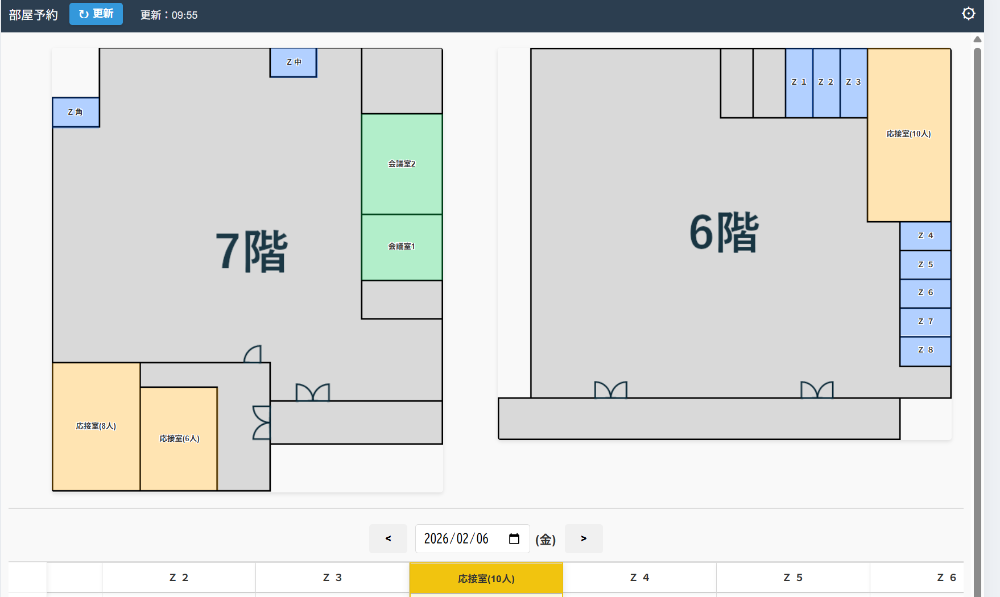
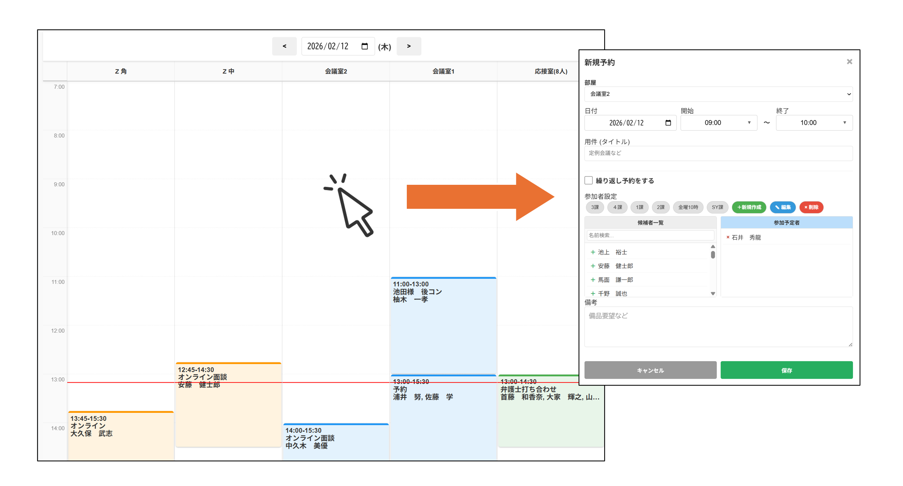
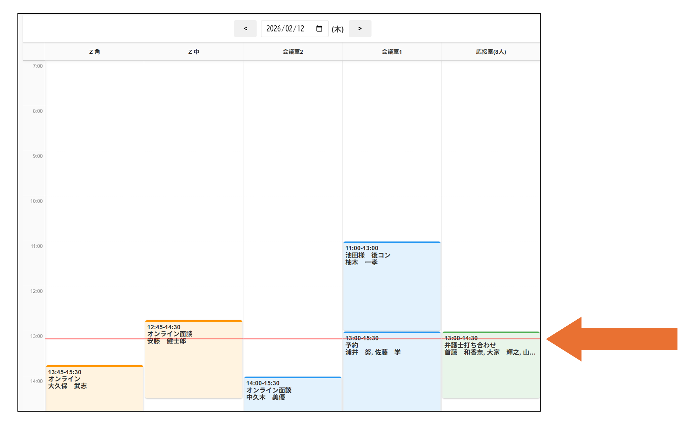
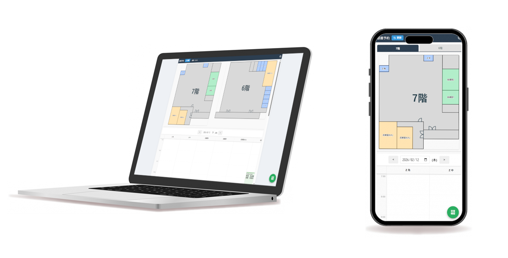

部屋ピン

導入効果
⏳ 予約の効率化：マップ内の部屋をクリックするだけで、予約へスムーズに移行
🏢 視覚的把握：「どの部屋が空いているか」を直感的に確認
🔄 リアルタイム同期：最新の予約状況を即座に反映し、ダブルブッキングや確認の手間を解消
開発の背景・概要
会議室や応接室、個室ブースの利用状況を把握するために、従来はTOHO SSを確認したり、現地まで空き状況を見に行く必要がありました。
部屋ピンは、部屋の予約のみに特化し、フロア図面と予約スケジュールを統合。誰が・いつ・どの部屋を使うのかを一目で把握し、その場で予約まで完結できるシステムとして開発されました。
主な機能
クイック予約＆詳細表示
マップ上の部屋をクリックすると予約画面へ。操作性も視覚性も良く、スムーズな予定の予約が可能ーム内での情報共有も円滑に行えます。

垂直タイムライン予約管理
部屋ごとに縦軸のタイムラインを表示。現在の時刻を示すレッドラインにより、直近の空き時間や次の予約までの残り時間を正確に把握できます。

マルチデバイス対応・自動更新
PCだけでなくタブレットやスマホからも閲覧可能。手動更新ボタンに加え、最新の予約データをバックグラウンドで取得し、常に最新の状態を保ちます。
